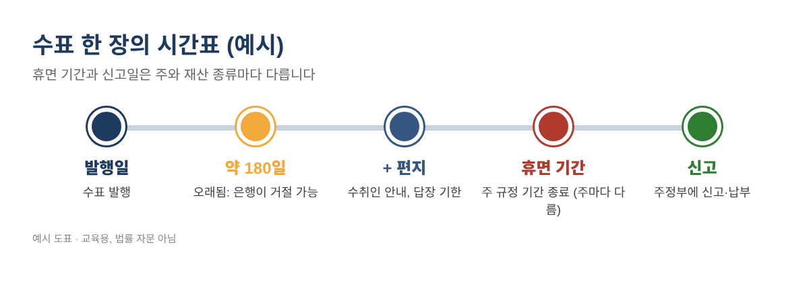
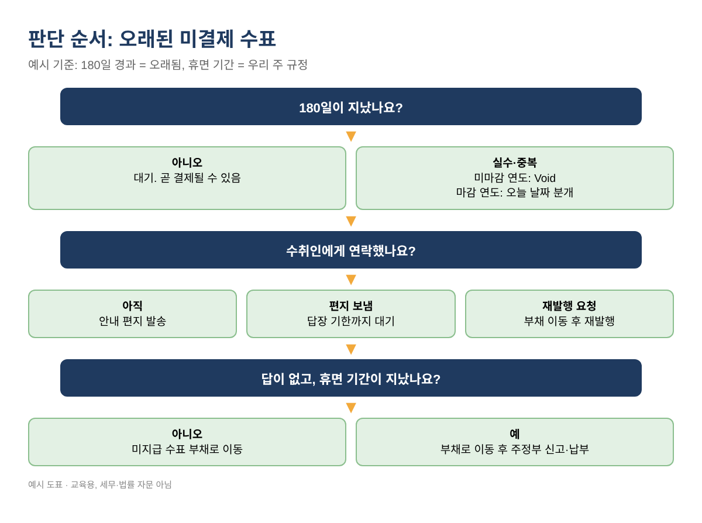
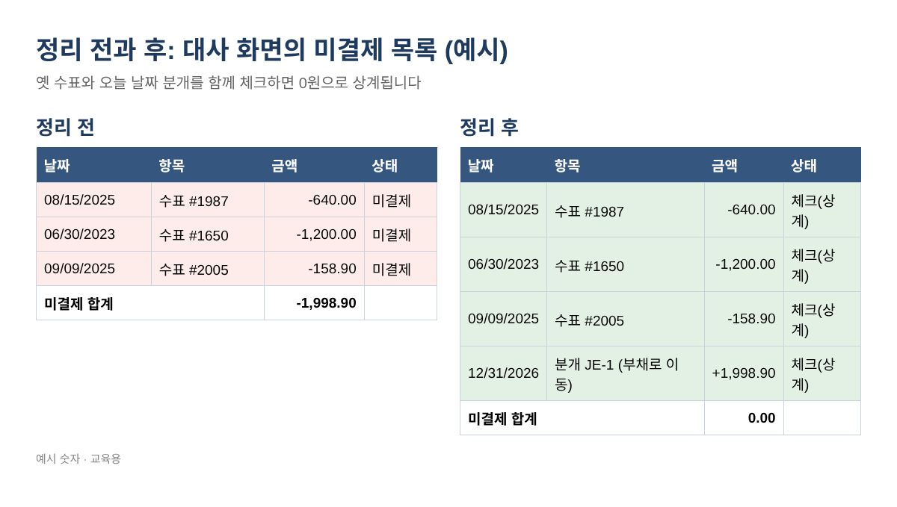

은행 대사에 몇 년째 남은 미결제 수표, 신고 끝난 연도를 건드리지 않고 정리하는 법
은행 대사(Bank reconciliation) 화면 맨 아래에 작년, 혹은 2023년에 쓴 수표가 아직도 "미결제"로 남아 있지 않으신가요? 은행에는 들어오지 않은 입금 한두 건도 같이요. 매달 다음 달로 넘어가고, 매달 그냥 지나치다 보면 연말 장부의 현금과 부채가 실제와 달라집니다. 이 글은 QuickBooks Desktop, QuickBooks Online, 또는 엑셀만으로 이런 항목을 정리하는 방법을 순서대로 설명합니다. 핵심은 세금 신고가 끝난 연도의 숫자를 건드리지 않는 것입니다.
오래된 미결제 수표가 문제인 이유
미결제 수표는 장부에서는 돈이 나갔는데 은행에는 아직 돈이 남아 있다는 뜻입니다. 오래된 것은 세 가지 이유로 꼭 정리해야 합니다.
- 결제되지 않을 수 있습니다. 각 주가 채택한 통일상법전(UCC) 4-404조에 따르면 은행은 발행일로부터 6개월이 지나 제시된 일반 수표를 지급할 의무가 없습니다. 약 180일이 지난 수표를 Stale check라고 부릅니다.
- 그 돈은 여전히 누군가의 돈입니다. 모든 주에 미청구 재산(Unclaimed property)법이 있습니다. 연락 없이 휴면 기간이 지나면, 결제되지 않은 거래처·급여 수표 금액을 주정부에 신고하고 보내야 할 수 있습니다. 기간은 주와 종류마다 다릅니다.
- 유령 입금은 현금과 매출을 부풀립니다. 장부에만 있는 입금은 대개 중복 입력, 은행피드 매칭 실수, 부도 수표입니다.

1단계: 미결제 목록 뽑기
QuickBooks Desktop
- Reports > Banking > Previous Reconciliation에서 은행 계정과 마지막 명세서 날짜를 고르고 Detail 리포트를 엽니다. 맨 끝에 미결제 거래가 나옵니다.
- 또는 Reports > Custom Reports > Transaction Detail을 만들고 날짜를 정리 기준일까지, Filters 탭에서 은행 계정과 Cleared = No를 지정합니다.
- Excel > Create New Worksheet로 내보냅니다.
QuickBooks Online
Desktop만 써 오신 분들을 위해 조금 자세히 적습니다. Online은 메뉴가 화면 오른쪽 위 톱니바퀴(Settings) 안에 모여 있습니다.
- Settings(톱니바퀴) > Reconcile을 누른 뒤 History by account를 선택합니다. 은행 계정을 고르고 가장 최근 대사 리포트를 열면, 그 명세서 날짜 기준 미결제 거래(Uncleared transactions)가 나옵니다.
- 또는 Chart of accounts에서 은행 계정의 View register를 열고, 필터에서 대사 상태(Reconcile status)를 결제·대사되지 않은 항목으로 지정합니다.
- 리포트 위의 내보내기 아이콘으로 엑셀 파일을 받습니다. Online 메뉴 이름은 가끔 바뀌므로, 화면이 다르면 Intuit 도움말에서 "reconciliation report"를 검색하세요.
필요한 칸은 날짜, 종류, 번호, 이름, 금액 다섯 개뿐입니다. 수표 금액은 =ABS(E5)로 양수로 바꿉니다.
2단계: 수식 세 개로 경과일 계산
B1에 정리 기준일(예: 12/31/2026), B2에 마지막으로 신고를 마친 연도(예: 2025), B3에 우리 주 휴면 기간(년)을 넣습니다. A열 5행부터 날짜가 있다면:
- 경과일: =$B$1-A5
- 오래됨(180일 초과): =IF($B$1-A5>180,"Yes","No")
- 마감 연도 여부: =IF(YEAR(A5)<=$B$2,"Yes","No")
- 휴면 기간 경과: =IF(EDATE(A5,12*$B$3)<=$B$1,"Yes","No")
엑셀과 구글 시트에서 똑같이 작동합니다.
| 날짜 | 항목 | 금액 | 경과일 | 오래됨 | 마감 연도 | 휴면 경과* |
|---|---|---|---|---|---|---|
| 11/20/2026 | 수표 #2210 | 186.40 | 41 | No | No | No |
| 04/02/2026 | 수표 #2101 | 950.00 | 273 | Yes | No | No |
| 08/15/2025 | 수표 #1987 | 640.00 | 503 | Yes | Yes | No |
| 06/30/2023 | 수표 #1650 | 1,200.00 | 1280 | Yes | Yes | Yes |
| 10/30/2026 | 입금 | 1,500.00 | 62 | Yes | No | 해당 없음 |
표 1. 모두 예시 값입니다. 기준일 2026-12-31, 마지막 마감 연도 2025, *휴면 3년은 예시일 뿐입니다.
3단계: 항목별로 처리 방법 정하기
아래 순서대로 판단합니다. 원칙은 하나입니다. 옛 수표를 지우지 말고, 이미 신고한 연도의 수표는 Void 하지 않는다. 그 연도에서 Void 하면 그해 비용(그리고 1099나 급여 서식)이 바뀝니다. 대신 지금 열려 있는 기간의 날짜로 분개해서 고칩니다.

- 아직 180일 전: 기다립니다.
- 실수·중복, 미마감 연도: 원래 날짜에서 Void.
- 실수·받을 돈 없음, 마감 연도: 오늘 날짜 분개로 차변 은행, 대변 원래 계정 (대변 계정은 CPA와 상의).
- 오래됐고 아직 줄 돈: 먼저 수취인에게 연락합니다.
4단계: 수취인에게 연락
짧은 편지면 충분합니다. 수표 번호·날짜·금액, 답장 기한(보통 30일), 그리고 답이 없으면 주정부에 미청구 재산으로 신고해야 할 수 있다는 문장을 넣습니다. 미국 거래처에게 보내므로 편지는 영어로 씁니다. 사본과 발송일을 꼭 보관하세요. 많은 주가 신고 전에 이 안내(Due diligence)의 증빙을 요구합니다. 수취인이 새 수표를 원하면 재발행하되, 5단계처럼 처리해 비용이 두 번 잡히지 않게 합니다.
5단계: 정리 분개 입력
먼저 계정을 하나 만듭니다. 유형 Other Current Liability, 이름 Uncashed Checks Payable(미지급 수표). Desktop은 Lists > Chart of Accounts > Account > New, Online은 Chart of accounts > New입니다. 그다음 정리 기준일 날짜로 분개 하나를 입력합니다 (Desktop: Company > Make General Journal Entries, Online: + New > Journal entry).
| 계정 | 차변 | 대변 | 적요 |
|---|---|---|---|
| Checking (은행) | 1,998.90 | 미결제 수표 #1987, #1650, #2005 | |
| Uncashed Checks Payable | 1,998.90 | 수취인 또는 주정부에 줄 돈 |
표 2. 예시 분개: $640.00 + $1,200.00 + $158.90 = $1,998.90
나중에 수표를 재발행하거나 주정부에 납부할 때는 원래 비용 계정이 아니라 Uncashed Checks Payable 계정으로 지정합니다.
6단계: 양쪽을 함께 대사
다음 대사(Desktop: Banking > Reconcile, Online: Settings > Reconcile)에서 옛 수표 와 분개 줄을 함께 체크합니다. 서로 상계되어 0원이므로 Cleared 잔액은 은행 명세서와 그대로 맞고, 옛 항목은 드디어 미결제 목록에서 사라집니다. Online에서는 이 분개를 은행피드에서 매칭하려고 하지 마세요. 피드에는 나타나지 않습니다.

7단계: 필요하면 주정부에 신고
unclaimed.org(미국 미청구재산 관리자 협회 NAUPA)에서 우리 주 프로그램을 찾아, 거래처·급여 수표의 휴면 기간, 안내 편지 규정, 연간 신고일을 확인합니다. 보통 수취인의 마지막 주소지 주에 신고합니다. 기한 안에 신고하고 부채 계정에서 납부합니다.
자주 하는 실수
- 대사 화면을 깨끗하게 보이려고 옛 수표를 삭제하기. 기록이 사라지고 Cleared 잔액이 틀어집니다.
- 신고가 끝난 연도에서 Void 하기. 그해 숫자가 바뀝니다.
- 아직 줄 돈인데 비용을 수입으로 되돌리기.
- 급여 대행사와 상의 없이 옛 급여 수표를 Void 하기.
- 재발행 수표를 원래 비용 계정으로 넣어 비용을 두 번 잡기.
- 오래된 입금을 모두 잃어버린 돈으로 보기. 상당수는 같은 은행피드 건의 중복입니다.
자주 묻는 질문
2년 전 수표를 그냥 Void 해도 되나요?
그 연도가 아직 열려 있고 그 연도로 신고한 것이 없을 때만 됩니다. 그렇지 않으면 현재 기간 분개를 써서 신고된 숫자를 그대로 둡니다.
6개월 지난 수표는 무효인가요?
꼭 그렇지는 않습니다. 은행이 지급할 의무가 없을 뿐 지급할 수도 있습니다. 더 중요한 것은 수취인에게 줄 돈이 사라지지 않는다는 점입니다.
오래된 수표는 모두 주정부에 내야 하나요?
연락 없이 우리 주 휴면 기간이 지나고, 안내 규정을 지킨 뒤에 신고 대상이 됩니다. 우리 주 Holder 안내를 확인하세요.
결제되지 않은 옛 입금은요?
먼저 은행 명세서에서 찾아보세요. 두 번 기록된 것이라면 미마감 연도는 중복 건을 Void, 마감 연도는 현재 기간 분개로 은행 계정을 대변 처리합니다.
체크리스트
- 정리 기준일까지 대사
- 미결제 목록 내보내기
- 경과일·마감 연도·휴면 여부 계산
- 미마감 연도 오류는 Void
- 오래된 수표 수취인에게 편지
- 현재 기간 분개 입력
- 옛 항목과 분개를 함께 체크
- 주 신고일을 달력에 기록
위 과정을 그대로 해 주는 오래된 미결제 수표·미확인 입금 정리 키트는 아래 무료 키트 다운로드에서 가입 없이 무료로 받으실 수 있습니다(엑셀 + PDF 가이드).
이 글은 교육용 정보이며 세무·법률·회계 자문이 아닙니다. 미청구 재산 규정은 주마다 다르므로 CPA나 변호사와 확인하세요. 예시 숫자는 모두 가상입니다. QuickBooks는 Intuit Inc.의 등록상표이며, 이 글은 Intuit과 제휴하거나 승인받지 않았습니다. QuickBooks is a registered trademark of Intuit Inc.; not affiliated with or endorsed by Intuit.
출처
- Intuit: How to handle stale-dated checks
- UCC 4-404 (Cornell LII)
- NAUPA: unclaimed.org
- Intuit 도움말: Fix issues at the end of a reconciliation in QuickBooks Online
- Intuit 커뮤니티: Old unreconciled transactions in QuickBooks Desktop
- Intuit 커뮤니티: Reconcile uncleared transactions from previous years
무료 키트 다운로드
글에서 설명한 내용을 그대로 따라 할 수 있는 도구입니다. 가입 없이 바로 받으세요.
- Excel 계산 도구 (.xlsx)Stale_Check_Cleanup_Tracker_2026_EN_KR.xlsx · 86 KB
- 단계별 가이드 (PDF)Stale_Check_Cleanup_Guide_2026_EN_KR.pdf · 492 KB
본인과 본인 사업에 무료로 쓰세요. 재판매·재배포는 하지 마세요. 일반 정보이며 세무·법률·회계 자문이 아닙니다. 숫자는 본인 자료로 꼭 확인하세요. QuickBooks는 Intuit Inc.의 상표이며 BIZLEX는 Intuit과 관련이 없습니다.